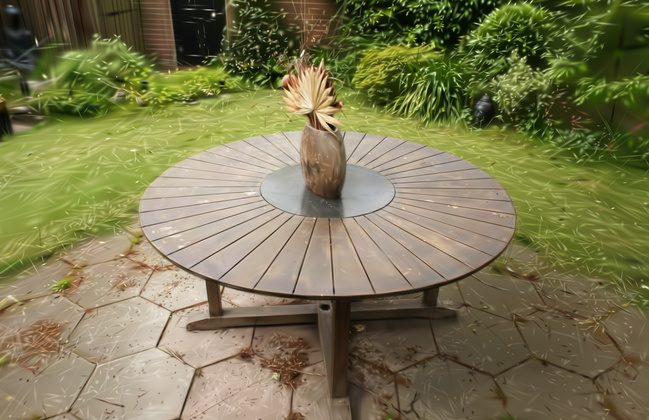
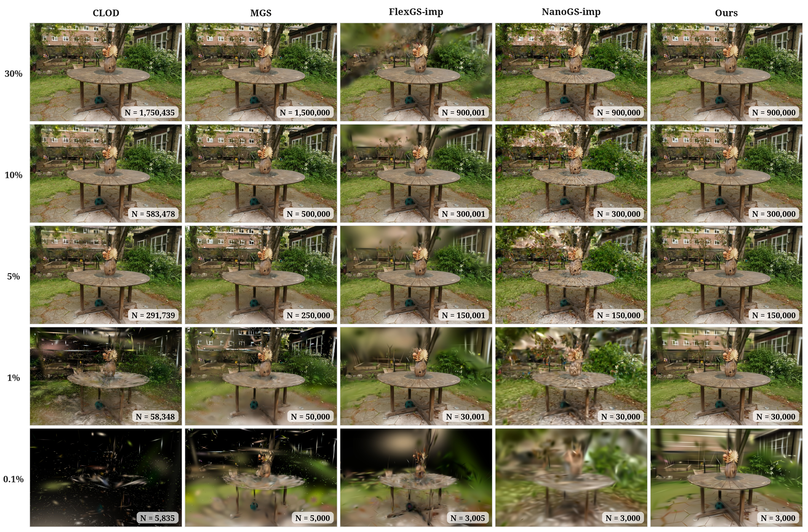

FlexGS · 学习预算变换
训练预算条件网络，选择高斯并预测几何参数变化；构建后可按预算推断，无需逐预算重训。
主要代价：适配训练。需要训练选择与变换网络；本实验的总离线耗时较长。
从同一完整模型（Full）出发，按需保留 0.1%–100% 的高斯，无需重训。
3DGS 用许多带颜色、形状和透明度的小椭球表示场景。预算指保留的高斯数量 K，百分比表示它占完整模型的比例。面对不同设备的算力或运行时资源变化，同一场景资产可以选择不同预算。
CLOD、MGS 让不同预算共享一套参数，再按序截取；为每个预算独立优化，则需要重复构建模型。下面三种方法都允许参数随数量变化，但将代价放在不同环节。
训练预算条件网络，选择高斯并预测几何参数变化；构建后可按预算推断，无需逐预算重训。
主要代价：适配训练。需要训练选择与变换网络；本实验的总离线耗时较长。
无需训练，通过局部合并高斯、重新计算参数，直接从已有模型生成目标数量的模型。
主要代价：目标模型转换。生成尚未准备的预算模型需要执行简化计算；表 2 记录这段转换时间。
在少量预算下直接优化参数，再连接这些适配后的状态；构建后按请求预算解码。
主要代价：额外存储。用残差图谱保存多预算适配信息，支持快速切换。
训练、转换计算和存储是不同维度的取舍。重建质量另看相同预算下的画面与指标，见下方实验结果。
高斯数量减少后，留下来的高斯需要承担更多重建任务。因此，它们的位置、形状、不透明度与外观，也需要随预算调整。
Garden · 测试视角 12

画面始终只显示这 2.4 万个高斯；当前使用在 0.8% 预算下优化后的参数。
基于这一观察，我们在少量预算下直接优化参数，保存为“锚点”，再连接这些状态。中间预算由相邻锚点计算得到，无需为每个预算重新训练。
逐步减少高斯数量，并优化保留下来的高斯；较小预算的高斯来自上一级模型。
按同一高斯的身份对齐各锚点，只保存相对完整模型的参数变化，组成残差图谱。
在相邻锚点之间插值共有高斯的参数；通过不透明度控制新增高斯的贡献，输出所需数量。
横向滑动查看完整流程 ↔

以 11 个预算锚点（含完整模型） 为例，残差图谱保存各锚点相对完整模型的参数变化。
约为原始完整模型文件（PLY）的 21.4%。
包含训练、编码、参数标定与模型打包。
95% 的请求不超过此耗时（P95）。RTX 4090，锚点常驻显存，仅计参数准备，不含渲染。
统计覆盖 13 个场景；额外存储不包含完整模型文件。
对比多场景画面、13 个场景的平均指标，以及连续预算下的重建质量。图表沿用论文的素材与比较设置。
横向滑动比较各方法 ↔

PSNR（像素重建质量，单位 dB）和 SSIM（结构相似度）越高越好；LPIPS（感知差异）越低越好。表格采用矢量格式，窄屏可横向滑动查看。
CLOD-3DGS 与 MGS 使用官方代码，本实验采用 MCMC（马尔可夫链蒙特卡洛）致密化版本。CLOD 在完整模型预训练后采样不同长度的高斯前缀微调；MGS 在每步同时优化完整集合与采样前缀，使一套参数适应多个预算。ParetoGS 则在少量预算下分别适配参数，再连接这些状态。
本表比较各方法自身完整模型的相同比例，并列出实际高斯数量；各方法的完整模型大小不同。

方法名旁为 13 场景平均离线耗时。ParetoGS 的约 10.3 分钟包含完整模型与锚点训练，以及编码、标定和打包；其中训练约 9.78 分钟。
三种方法共用 ImprovedGS 完整模型，按相同请求数量比较。FlexGS-imp 学习预算条件的选择与几何变换；NanoGS-imp 为每个目标预算离线生成独立模型；ParetoGS 用稀疏适配锚点解码所需预算。方法名中的 -imp 表示采用这一共同初始化。
FlexGS-imp 使用官方代码进行 35,000 步预算适配，训练采样 1%、5%、10%、15%；表中的 0.1% 与 30% 位于该采样范围之外。NanoGS-imp 同样使用官方实现。

在共同完整模型的比较中，ParetoGS 在表 2 所测的全部五档预算上，PSNR、SSIM 和 LPIPS 均优于 FlexGS-imp 与 NanoGS-imp。
FlexGS-imp 的约 81 分钟包含共同完整模型的构建与预算适配。NanoGS-imp 的 48–56 秒是从 Full 到一个目标模型的离线转换耗时；03 节演示与 04 节毫秒计时对应已构建模型的在线预算切换。
继续查看锚点之间的解码质量，并与每个预算单独优化的 GNS 参考比较。曲线为对应场景全部测试视角的平均结果。

论文包含算法细节、各组件作用的对比实验，以及各场景的完整结果。下方提供 BibTeX 格式的引用。
@misc{deng2026paretogs,
title = {ParetoGS: High-Quality Continuous-Budget 3D Gaussian
Splatting with Sparse Adapted Anchors},
author = {Xiaobin Deng and Changyu Diao and Min Li and Duanqing Xu},
year = {2026}
}